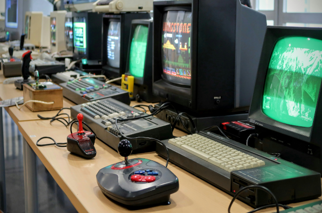

O Início da era Gamer
postado 19 março de 2026
O início dos games remonta às décadas de 1950 e 1960, quando cientistas e engenheiros começaram a criar os primeiros jogos em computadores gigantes, usados principalmente para pesquisas. Um dos primeiros exemplos foi o “Tennis for Two”, criado em 1958, que simulava uma partida de tênis em uma tela simples.
Na década de 1970, os jogos eletrônicos começaram a se popularizar com a criação dos arcades, como o famoso “Pong”, que levou a experiência dos games ao público geral. A partir daí, surgiram os primeiros consoles domésticos, permitindo que as pessoas jogassem em casa.
Com o avanço da tecnologia, os jogos evoluíram rapidamente, passando de gráficos simples para experiências cada vez mais imersivas. Esse início marcou o surgimento de uma das maiores indústrias do entretenimento no mundo atual.